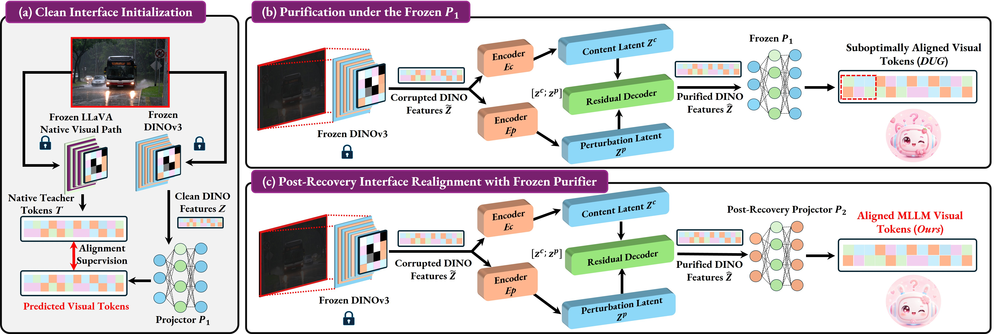

The reference
Raw visual features paired with a clean-trained, frozen readout.
REPRESENTATION · RECOVERY · READOUT
Recovery and Readout Adaptation
in Multimodal Large Language Models
1 Harbin Engineering University · 2 South China Normal University · 3 Heilongjiang University of Science and Technology · 4 Sun Yat-sen University · 5 University of Auckland · 6 Nanyang Technological University
Preprint · November 2026 · arXiv submitted; announcement pending
Better features.
Better predictions?
THE CENTRAL QUESTION
Feature recovery targets the geometry of a clean visual representation; multimodal prediction depends on how a readout uses that representation. We examine this distinction in controlled systems connecting a shared visual encoder to frozen language-side models through learned readouts. Across four downstream models and nine benchmarks, recovery has mixed effects under a clean-trained readout. Readout adaptation improves the reported utility in most evaluated model–benchmark combinations, yet adapting directly to raw features is often competitive with or better than adapting after explicit recovery. In a GQA control, additional readout training on recovered clean features raises the score from 58.82 to 59.35, while adaptation using recovered clean and corrupted features reaches 59.67. This limits attribution of the entire adaptation gain to distribution matching. Separate fidelity analyses characterize task-specific and task-agnostic recovery settings. Together, the results motivate evaluating the representation–readout pair through distinct measurements of feature fidelity, fixed-readout utility, and adapted-readout utility.
METHOD
A shared DINOv3 encoder connects to a frozen language-side model through a learned readout. We independently vary feature recovery and readout adaptation to isolate their effects.
Raw visual features paired with a clean-trained, frozen readout.
Insert feature recovery while keeping the same readout fixed.
Train the readout directly on raw clean and corrupted features.
Adapt the readout to the fixed recovered representation.


RESULTS
Model–benchmark pairs improve when the readout is adapted to recovered features.
Pairs favor recovery followed by adaptation over direct adaptation to raw features.
Counts compare point estimates, not statistical significance. Results describe controlled systems with a shared DINOv3 encoder and replacement readouts.
EXPLORE THE MAIN TABLE
Scores in percent · axis starts at zero · benchmark-specific scoring follows the paper.
| Condition | GQA | TextVQA | TallyQA | POPE | VQAv2 | VizWiz | MMStar | BLINK | NaturalBench |
|---|---|---|---|---|---|---|---|---|---|
| Raw-Frozen | 58.99 | 9.96 | 54.00 | 82.42 | 65.45 | 17.83 | 27.53 | 36.12 | 46.86 |
| Recovered-Frozen | 58.82 | 9.57 | 49.01 | 80.91 | 64.62 | 17.29 | 27.38 | 36.14 | 45.69 |
| Raw-Adapted | 59.74 | 10.11 | 55.29 | 82.47 | 66.71 | 18.38 | 28.16 | 35.77 | 47.42 |
| Recovered-Adapted | 59.67 | 9.97 | 54.74 | 82.18 | 66.53 | 18.28 | 27.71 | 35.12 | 46.92 |
| Condition | GQA | TextVQA | TallyQA | POPE | VQAv2 | VizWiz | MMStar | BLINK | NaturalBench |
|---|---|---|---|---|---|---|---|---|---|
| Raw-Frozen | 48.34 | 7.62 | 53.97 | 75.24 | 60.83 | 17.23 | 34.22 | 38.52 | 48.45 |
| Recovered-Frozen | 47.48 | 6.82 | 48.62 | 74.73 | 57.50 | 13.72 | 33.84 | 37.82 | 46.59 |
| Raw-Adapted | 49.66 | 8.70 | 55.38 | 75.87 | 63.40 | 20.06 | 35.53 | 38.79 | 49.61 |
| Recovered-Adapted | 49.84 | 8.17 | 55.82 | 76.17 | 62.97 | 18.43 | 35.24 | 39.05 | 49.28 |
| Condition | GQA | TextVQA | TallyQA | POPE | VQAv2 | VizWiz | MMStar | BLINK | NaturalBench |
|---|---|---|---|---|---|---|---|---|---|
| Raw-Frozen | 54.10 | 10.87 | 60.29 | 83.18 | 68.63 | 20.24 | 39.49 | 41.47 | 62.79 |
| Recovered-Frozen | 53.79 | 9.98 | 58.29 | 82.87 | 68.05 | 17.88 | 36.91 | 41.14 | 61.47 |
| Raw-Adapted | 54.72 | 11.17 | 60.84 | 83.14 | 69.59 | 21.46 | 40.44 | 42.22 | 63.30 |
| Recovered-Adapted | 54.78 | 11.23 | 60.76 | 83.42 | 69.37 | 20.75 | 39.64 | 41.07 | 63.18 |
| Condition | GQA | TextVQA | TallyQA | POPE | VQAv2 | VizWiz | MMStar | BLINK | NaturalBench |
|---|---|---|---|---|---|---|---|---|---|
| Raw-Frozen | 19.76 | 10.11 | 32.77 | 77.16 | 23.36 | 11.30 | 34.44 | 24.88 | 46.77 |
| Recovered-Frozen | 21.05 | 10.19 | 33.99 | 77.01 | 24.57 | 10.74 | 33.42 | 25.58 | 44.50 |
| Raw-Adapted | 20.93 | 10.44 | 35.64 | 77.84 | 26.05 | 12.32 | 35.80 | 26.55 | 47.71 |
| Recovered-Adapted | 21.09 | 10.38 | 36.67 | 77.73 | 26.19 | 11.54 | 35.78 | 25.43 | 47.16 |
OPEN RESOURCES
Four released checkpoints cover all four LLaVA-1.5 conditions. For recovered-feature inference, start with the recovery module and the M6 readout.
Canonical seed 123 · Apache-2.0 · SHA-256 checksums included
Training and inference code, experiment configurations, a GQA scorer, and the released checkpoints.
Hugging FaceCITATION
The current citation links to OpenReview. An arXiv identifier will be added after announcement.
@misc{zhu2026beyond,
title = {Beyond Feature Fidelity: Recovery and Readout Adaptation in Multimodal Large Language Models},
author = {Zhiliang Zhu and jiazheng Huang and Chubin Peng and Yang Zijie and Puyue Wang and Yuquan Xue and Dawei Zhao},
year = {2026},
url = {https://openreview.net/forum?id=1ki2Qs08aF}
}